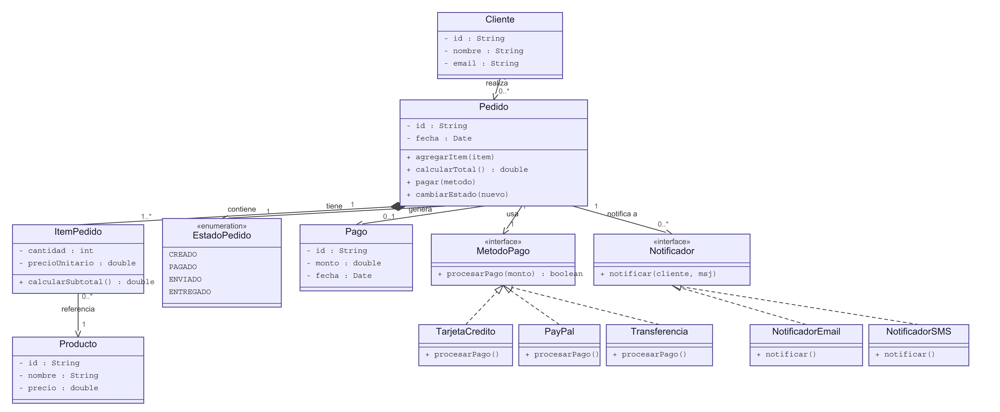
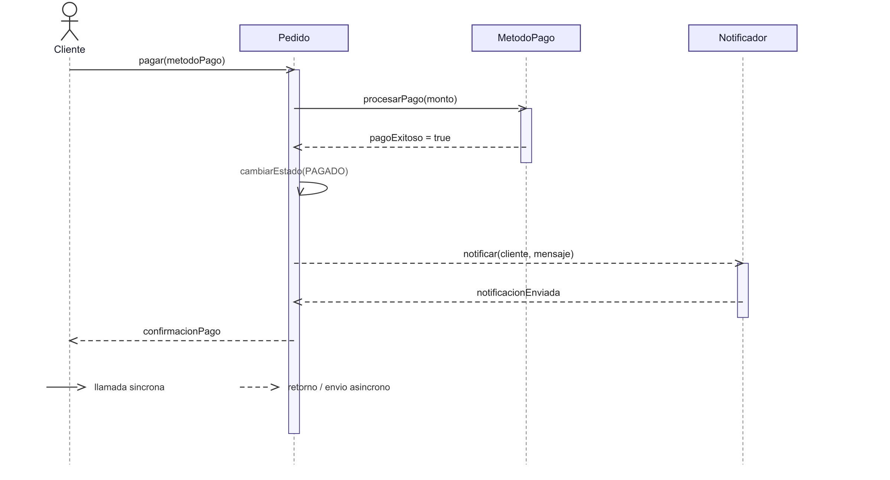

Rediseño orientado a servicios de la plataforma de gestión de pedidos, pagos y notificaciones de EcoLogistics. El sistema legado tenía la lógica de pago incrustada con condicionales dentro del flujo de pedidos y el envío de notificaciones invocado directamente desde el código que cambia el estado del pedido, lo que obligaba a modificar clases centrales cada vez que se agregaba un método de pago o un canal de notificación nuevo.
El modelo de dominio gira en torno a Pedido, que compone sus ItemPedido (no existen sin el pedido que los contiene), se asocia con Cliente y con un EstadoPedido. El pago se resuelve con el patrón Strategy a través de la interfaz MetodoPago (TarjetaCredito, PayPal, Transferencia), y las notificaciones con la interfaz Notificador (NotificadorEmail, NotificadorSMS).

El cliente confirma el pago; Pedido delega el cobro en el MetodoPago concreto seleccionado y, al recibir la confirmación, cambia su propio estado a PAGADO. Luego dispara la notificación a través de Notificador sin bloquear la respuesta al cliente.

| Patrón | Rol |
|---|---|
| Strategy Métodos de pago |
La interfaz MetodoPago declara procesarPago(monto). Cada método es una estrategia intercambiable en tiempo de ejecución; Pedido solo conoce la abstracción. Agregar una pasarela nueva es una clase adicional, no un cambio en la lógica de negocio (principio abierto/cerrado). |
| Observer Notificación de estado |
Pedido notifica a través de Notificador cada cambio de estado, sin saber qué hará cada implementación. Agregar un canal nuevo (push, WhatsApp) no requiere tocar Pedido. |
| Factory Creación |
Centraliza en un único punto la decisión de qué clase concreta de MetodoPago instanciar, en vez de dispersarla en formularios o controladores. |
cambiarEstado(), un único punto donde auditar sin tocar el resto del sistema.